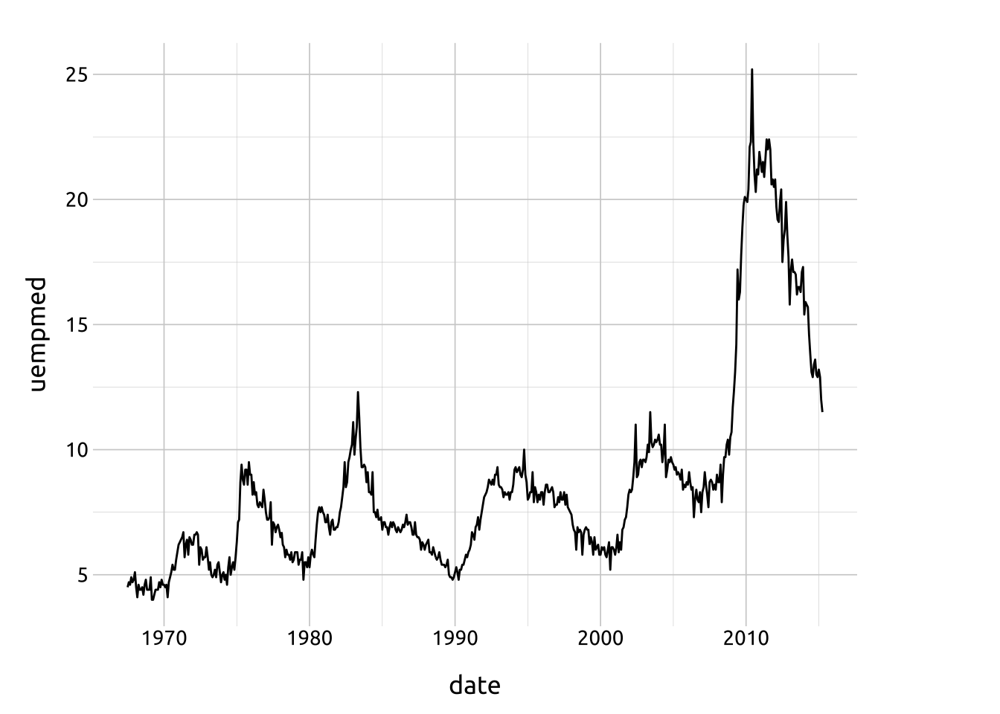
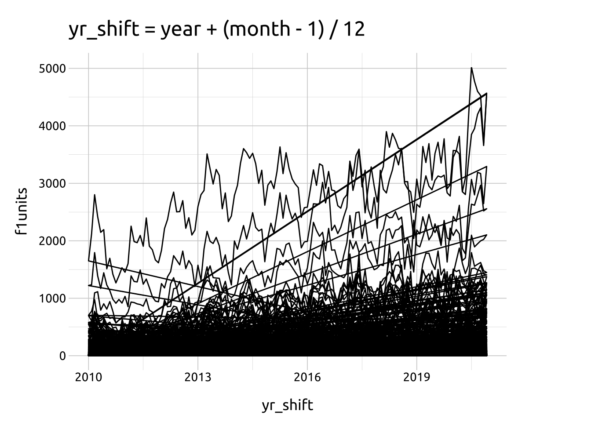
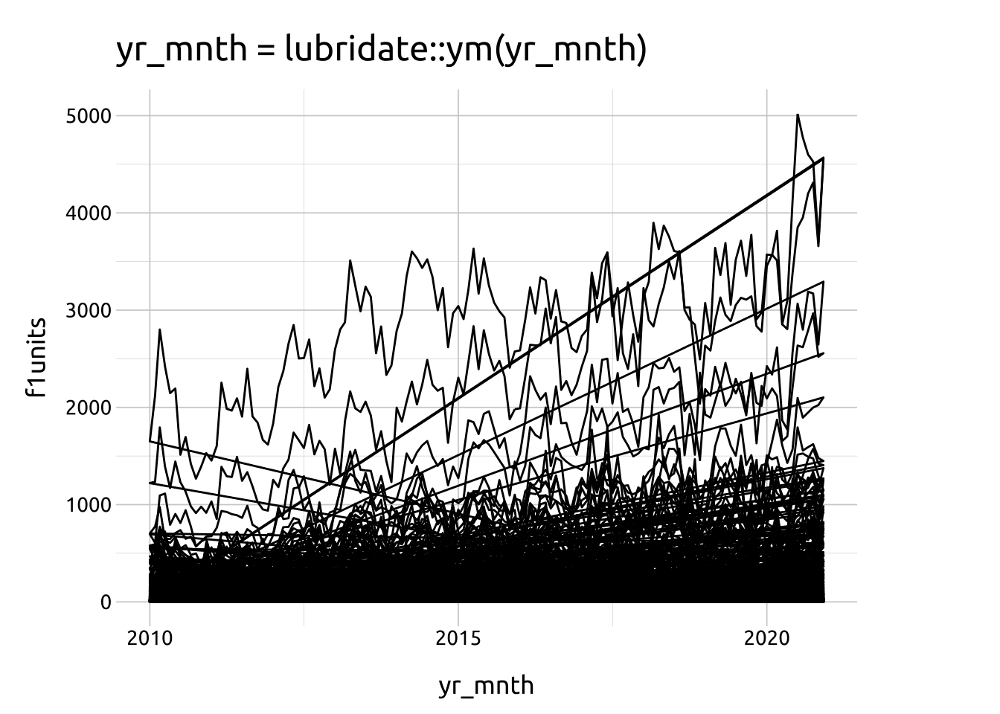
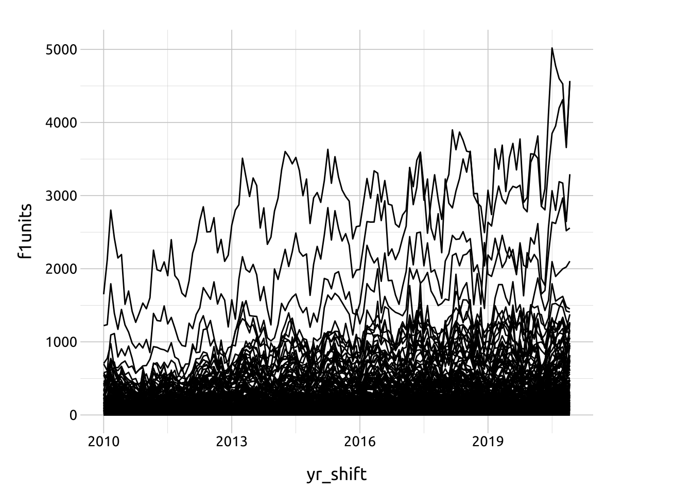
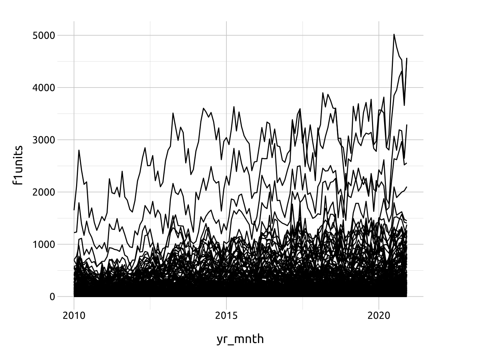
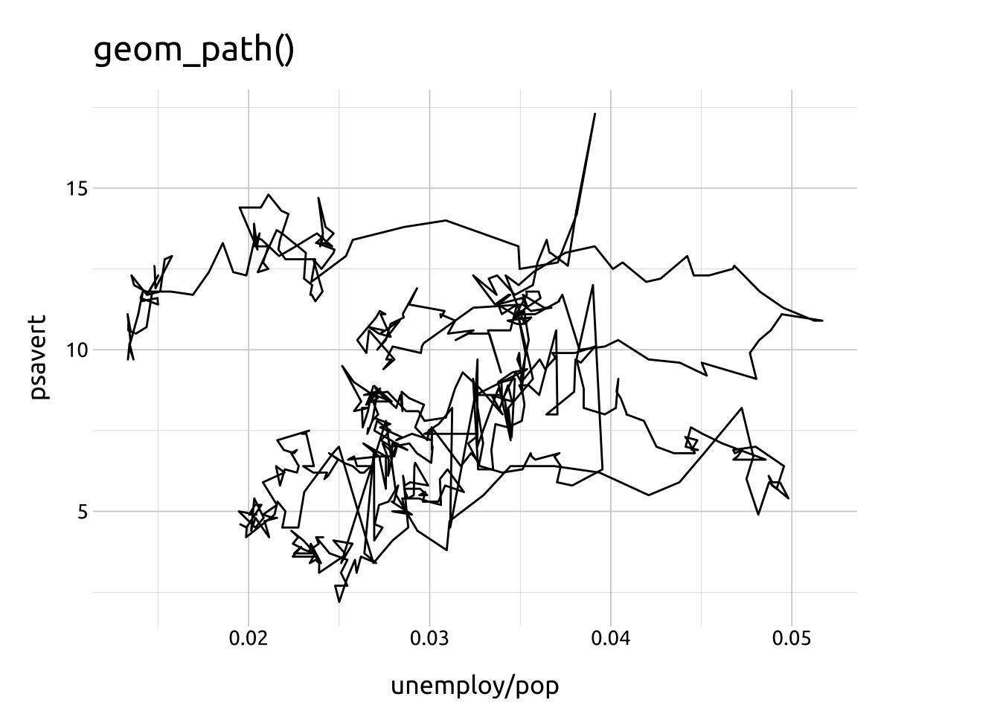
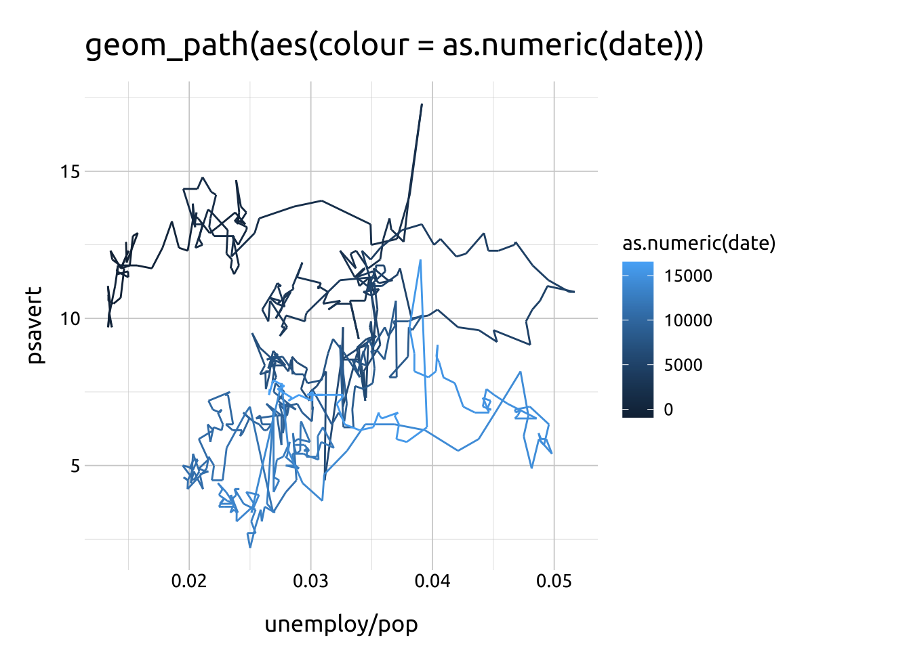

geom_path()
Getting set up

PACKAGES:
Install packages.
Code
install.packages("ggplot2")
library(ggplot2)DATA:
Load the ggplot2::economics data.
Code
economics <- ggplot2::economics
dplyr::glimpse(economics)Rows: 574
Columns: 6
$ date <date> 1967-07-01, 1967-08-01, 1967-09-01, 1967-10-01, 1967-11-01, …
$ pce <dbl> 506.7, 509.8, 515.6, 512.2, 517.4, 525.1, 530.9, 533.6, 544.3…
$ pop <dbl> 198712, 198911, 199113, 199311, 199498, 199657, 199808, 19992…
$ psavert <dbl> 12.6, 12.6, 11.9, 12.9, 12.8, 11.8, 11.7, 12.3, 11.7, 12.3, 1…
$ uempmed <dbl> 4.5, 4.7, 4.6, 4.9, 4.7, 4.8, 5.1, 4.5, 4.1, 4.6, 4.4, 4.4, 4…
$ unemploy <dbl> 2944, 2945, 2958, 3143, 3066, 3018, 2878, 3001, 2877, 2709, 2…geom_path()
BASICS:
Below is a demonstration of a line graph using geom_path(), with a date variable mapped to the x axis, and a numeric (double) variable on the y axis.
Code
#| out-height: '100%'
#| out-width: '100%'
#| layout-ncol: 1
ggp2_path_base <- ggplot(data = economics,
aes(x = date, y = unemploy))
ggp2_path_base + geom_path()
AESTHETICS:
The required aesthetics are: x and y positions
Code
ggp2_path_base <- ggplot(data = economics,
aes(x = date, y = uempmed))
ggp2_path_base + geom_path()
OPTIONAL AESTHETICS:
Optional aesthetics include:
groupcolorlinewidthalphalinetype
group
To explore group, we’ll load some data on Building Permit Data for United States from Texas A & M’s Real Estate Research Center.
Code
permits_raw <- readr::read_csv(file = "../data/dataPermit_full.csv",
na = "null")
dplyr::glimpse(permits_raw)Rows: 111,784
Columns: 14
$ area <chr> "Abilene, TX", "Abilene, TX", "Abilene, TX", "Abilene, TX…
$ date <chr> "01/1980", "02/1980", "03/1980", "04/1980", "05/1980", "0…
$ f1units <dbl> 24, 39, 38, 29, 29, 42, 48, 67, 53, 80, 44, 65, 55, 4, 70…
$ f1change <dbl> NA, NA, NA, NA, NA, NA, NA, NA, NA, NA, NA, NA, 129.2, -8…
$ f1value <dbl> 67900, 75900, 78000, 66500, 77600, 66500, 67600, 69000, 6…
$ f1valchange <dbl> NA, NA, NA, NA, NA, NA, NA, NA, NA, NA, NA, NA, -2.5, -48…
$ f24units <dbl> 4, 0, 4, 0, 0, 0, 18, 0, 2, 2, 0, 4, 6, 0, 0, 0, 8, 20, 8…
$ f24change <dbl> NA, NA, NA, NA, NA, NA, NA, NA, NA, NA, NA, NA, 50.0, 0.0…
$ f24value <dbl> 46200, 0, 37000, 0, 0, 0, 24400, 0, 31200, 23800, 0, 5350…
$ f24valchange <dbl> NA, NA, NA, NA, NA, NA, NA, NA, NA, NA, NA, NA, -13.6, 0.…
$ f5units <dbl> 200, 0, 0, 0, 0, 0, 0, 0, 0, 152, 0, 0, 0, 0, 0, 0, 12, 2…
$ f5change <dbl> NA, NA, NA, NA, NA, NA, NA, NA, NA, NA, NA, NA, -100, 0, …
$ f5value <dbl> 12800, 0, 0, 0, 0, 0, 0, 0, 0, 22700, 0, 0, 0, 0, 0, 0, 4…
$ f5valchange <dbl> NA, NA, NA, NA, NA, NA, NA, NA, NA, NA, NA, NA, -100, 0, …First we’ll create the yr_shift and yr_mnth variables, and limit the data to 2010 - 2020.
Code
permits <- permits_raw |>
tidyr::separate(col = date,
into = c("month", "year"),
sep = "/",
convert = TRUE,
remove = FALSE) |>
dplyr::mutate(
yr_shift = year + (month - 1) / 12,
yr_mnth = paste0(year, "-", month),
yr_mnth = lubridate::ym(yr_mnth)) |>
dplyr::filter(year >= 2010 & year <= 2020) |>
dplyr::select(year, yr_shift, date,
yr_mnth, area, contains("units"))
utils::head(permits, 10)yr_shift leaves 01/2010 as 2010.000, but 02/2010 becomes 2010.083, and 03/2010 shifts a little bit more to 2010.167, and so on.
If we try to view the change in f1units using geom_path() with yr_shift and yr_mnth, we see the following:
Code
ggplot(data = permits,
mapping = aes(x = yr_shift, y = f1units)) +
geom_path() +
labs(title = "yr_shift = year + (month - 1) / 12")
ggplot(data = permits,
mapping = aes(x = yr_mnth, y = f1units)) +
geom_path() +
labs(title = "yr_mnth = lubridate::ym(yr_mnth)")

We can see the lines aren’t acting like we expected, but if we map the area variable to group…
Code
ggplot(data = permits,
mapping = aes(x = yr_shift, y = f1units)) +
geom_path(aes(group = area))
ggplot(data = permits,
mapping = aes(x = yr_mnth, y = f1units)) +
geom_path(aes(group = area))

We can see the lines are now separated by area.
color
The color aesthetic can be set or mapped, and is useful for differentiating categorical levels.
Code
ggp2_path_base <- ggplot(economics)
ggp2_path_base_long <- ggplot(economics_long)
# mapped color
ggp2_path_base_long +
geom_path(aes(x = date,
y = value01,
color = variable))
# set color
ggp2_path_base +
geom_path(aes(x = date,
y = uempmed),
color = "#007bff")

linewidth
The linewidth determines the size of the line.
Code
# color, linewidth
ggp2_path_base_long +
geom_path(aes(x = date,
y = value01,
color = variable),
linewidth = 0.75)
alpha
The alpha sets the opacity of the line (and is useful for overlapping lines).
Code
# color, alpha, linewidth
ggp2_path_base_long +
geom_path(aes(x = date,
y = value01,
color = variable),
alpha = 1 / 2,
linewidth = 0.75)
linetype
The linetype can be mapped or set with values from ggplot2-specs
Code
# map group, color, linetype, with facets
ggp2_path_base_long +
geom_path(aes(x = date,
y = value01,
color = variable,
group = variable,
linetype = variable)) +
facet_wrap(. ~ variable, ncol = 2) +
theme(legend.position = "none")
ARGUMENTS:
We’ve defined two functions for displaying the arguments in geom_path(): path_linetype() displays the different linetype options, and path_lines() displays the options for lineend and linejoin.
linetype
We’ve defined path_linetype(), a function that lets us quickly specify the linetype aesthetic for geom_path():
Code
path_linetype <- function(type = "solid") {
df <- data.frame(x = 1:5, y = c(5, 1, 4, 2, 7))
ggplot2::ggplot(data = df,
mapping = aes(x = x, y = y)) +
xlim(0.5, 5.5) +
ylim(0, 10) +
ggplot2::geom_path(
linewidth = 15,
lineend = "round",
linetype = "solid") +
ggplot2::geom_path(
linewidth = 1.5,
color = "#ffffff",
linetype = type) +
ggplot2::labs(subtitle = type)
}The white line displays the linetype against a black backdrop to enhance visibility. See the lineend argument in the section below:
Code
# manually set linetype
# type = one of: "solid", "dashed", "dotted", "dotdash",
# "longdash", "twodash"
path_linetype(type = "dashed")
path_linetype(type = "dotted")
path_linetype(type = "dotdash")
path_linetype(type = "longdash")
path_linetype(type = "twodash")
path_linetype(type = "solid")


Below the define path_lines(), which builds line graphs with geom_path()’s lineend and linejoin arguments set to "round", "butt", or "square" and "bevel", "round", and "mitre".
The linewidth (lw) and linemitre (lnmtr) can be adjusted to exaggerate their effects.
We’ve added white lines/points to illustrate the data points.
Code
path_lines <- function(lw = 5, lend = 'r', ljoin = 'r', lnmtr = NULL) {
lineends <- c('r' = 'round', 'b' = 'butt', 's' = 'square')
linejoins <- c('r' = 'round', 'm' = 'mitre', 'b' = 'bevel')
ljoin <- linejoins[ljoin]
lend <- lineends[lend]
df <- data.frame(x = 1:5, y = c(5, 1, 4, 2, 7))
ggplot2::ggplot(data = df,
mapping = aes(x = x, y = y)) +
xlim(0.5, 5.5) +
ylim(0, 10) +
ggplot2::geom_path(
linewidth = lw,
lineend = lend,
linejoin = ljoin,
linemitre = lnmtr
) +
geom_path(color = "#ffffff") +
geom_point(size = 3, color = "#ffffff") +
ggplot2::labs(title = paste0(
"lineend = ", lend,
" / ",
"linejoin = ", ljoin),
subtitle = paste0("linewidth = ", lw))
}Lineend: round
A “round” line ending extends the line width slightly and produces curved caps at the start and end of the line (with the intersecting values at the center).
The white line/points are the data points
Code
path_lines(lw = 15, lend = "r", ljoin = "r") # round/round
path_lines(lw = 15, lend = "r", ljoin = "m") # round/mitre
path_lines(lw = 15, lend = "r", ljoin = "b") # round/bevel 


Linejoin: round
A “round” line join produces a curve at the intersection of points on the line.
The white line/points are the data points
Code
path_lines(lw = 15, lend = "r", ljoin = "r") # round/round
path_lines(lw = 15, lend = "b", ljoin = "r") # butt/round
path_lines(lw = 15, lend = "s", ljoin = "r") # square/round


Lineend: butt
A “butt” line end produces an abrupt ending at the start and end of the data points along the line.
The white line/points are the data points
Code
path_lines(lw = 15, lend = "b", ljoin = "r") # butt/round
path_lines(lw = 15, lend = "b", ljoin = "m") # butt/mitre
path_lines(lw = 15, lend = "b", ljoin = "b") # butt/bevel 


Linejoin: mitre
A “mitre” line join extends the area of the line width between intersecting points, giving each connecting point a straight edge.
The white line/points are the data points
Code
path_lines(lw = 15, lend = "b", ljoin = "m") # butt/mitre
path_lines(lw = 15, lend = "s", ljoin = "m") # square/mitre
path_lines(lw = 15, lend = "r", ljoin = "m") # round/mitre 


Lineend: square
A “square” line ending extends the line width slightly and produces a square cap at the start and end of the line (with the intersecting values at the center).
The white line/points are the data points
Code
path_lines(lw = 15, lend = "s", ljoin = "r") # square/round
path_lines(lw = 15, lend = "s", ljoin = "m") # square/mitre
path_lines(lw = 15, lend = "s", ljoin = "b") # square/bevel


Linejoin: bevel
A “bevel” line join ‘shaves’ the line width at the intersection of data points and curves the line with by producing two additional angles (with the intersecting values at the center of the two angles).
The white line/points are the data points
Code
path_lines(lw = 15, lend = "b", ljoin = "b") # butt/bevel
path_lines(lw = 15, lend = "s", ljoin = "b") # square/bevel
path_lines(lw = 15, lend = "r", ljoin = "b") # round/bevel 


Multiple x variables
Code
ggp2_path_unemploy_pop <- ggplot(data = economics,
mapping = aes(x = unemploy/pop, y = psavert))
ggp2_path_unemploy_pop +
geom_path() +
labs(title = "geom_path()")
ggp2_path_unemploy_pop +
geom_path(aes(colour = as.numeric(date))) +
labs(title = "geom_path(aes(colour = as.numeric(date)))")
